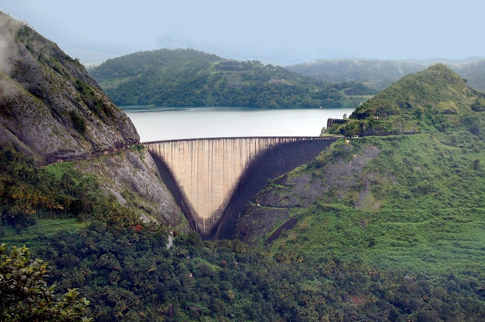

Munnar

Nestled in the Western Ghats of Kerala, Munnar unfolds as a captivating hill station celebrated for its enchanting landscapes. Vast tea plantations cloak the region in a patchwork of lush greenery against the undulating hills. Mist-clad mountains, meandering streams, and vibrant flora contribute to a picturesque setting, establishing Munnar as a haven for nature enthusiasts. Beyond the undulating tea estates, the exploration extends to the Eravikulam National Park, a sanctuary for the endangered Nilgiri Tahr, adding a touch of wildlife to the region's natural charm. Munnar, with its alluring blend of tea-scented air and biodiverse wonders, stands as a must-visit destination, promising tranquility amid nature's embrace and a journey into the heart of Kerala's pristine Western Ghats.
Idukki Arch Dam
Tucked away in the Western Ghats of Kerala, Munnar is a mesmerizing hill station renowned for its enchanting landscapes. The region is blanketed with vast tea plantations that form a patchwork of lush greenery against the rolling hills. Mist-covered mountains, meandering streams, and vibrant flora create a picturesque setting, making Munnar a haven for nature lovers. Beyond the tea estates, visitors can explore the Eravikulam National Park, home to the endangered Nilgiri Tahr, adding a touch of wildlife to the region's natural charm.

Periyar National Park

Nestled around the Periyar Lake, Periyar National Park unfolds as a captivating wildlife sanctuary, offering a journey into the heart of Kerala's rich biodiversity. The sanctuary is acclaimed for its immersive boat safaris, providing visitors with the opportunity to traverse serene waters while encountering diverse wildlife. Elephants and tigers, along with a myriad of bird species, inhabit the lush landscapes of Periyar National Park, offering a unique chance to witness the thriving fauna of the Western Ghats in their natural habitat. The park stands as a testament to the region's commitment to preserving and showcasing its remarkable ecological diversity.